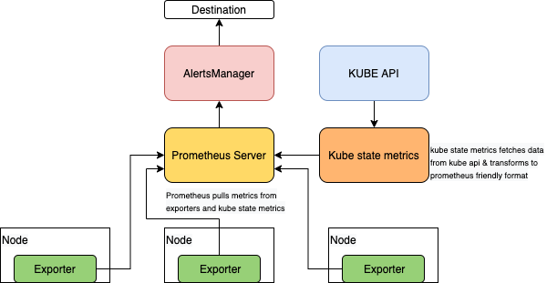

모니터링¶
프로메테우스(Prometheus)는, CNCF 졸업 프로젝트로서 쿠버네티스에 기본적으로 통합되는 가장 인기 있는 모니터링 시스템입니다. 프로메테우스는 컨테이너, 파드, 노드 및 클러스터와 관련된 메트릭을 수집합니다. 또한 프로메테우스는 AlertsManager를 활용합니다. AlertsManager를 사용하면 클러스터에서 문제가 발생할 경우 경고를 프로그래밍하여 경고할 수 있습니다. 프로메테우스는 지표 데이터를 지표 이름 및 키/값 쌍으로 식별되는 시계열 데이터로 저장합니다. 프로메테우스에는 프로메테우스 쿼리 언어의 줄임말인 PromQL이라는 언어를 사용하여 쿼리하는 방법이 포함되어 있습니다.
프로메테우스 메트릭 수집의 상위 수준 아키텍처는 다음과 같습니다.

프로메테우스는 풀 메커니즘을 사용하고 익스포터(Exporter)를 사용하여 타겟에서 메트릭을 스크랩하고 kube state metrics를 사용하여 쿠버네티스 API에서 메트릭을 스크랩합니다. 즉, 애플리케이션과 서비스는 프로메테우스 형식의 메트릭이 포함된 HTTP(S) 엔드포인트를 노출해야 합니다. 그러면 프로메테우스는 구성에 따라 주기적으로 이런 HTTP(S) 엔드포인트에서 메트릭을 가져옵니다.
익스포터를 사용하면 타사 지표를 프로메테우스 형식의 지표로 사용할 수 있습니다. 프로메테우스 익스포터는 일반적으로 각 노드에 배포됩니다. 익스포터 전체 목록은 프로메테우스 익스포터 문서를 참조하십시오. node exporter는 Linux 노드 용 호스트 하드웨어 및 OS 메트릭을 내보내는 데 적합하지만 윈도우 노드에서는 작동하지 않습니다.
윈도우 노드가 있는 혼합 노드 EKS 클러스터에서 안정적인 프로메테우스 헬름 차트를 사용하면 윈도우 노드에 장애가 발생한 파드가 표시됩니다. 이 익스포터는 윈도우용이 아니기 때문입니다. 윈도우 작업자 풀을 별도로 처리하고 대신 윈도우 워커 노드 그룹에 윈도우 익스포터를 설치해야 합니다.
윈도우 노드에 대해 프로메테우스 모니터링을 설정하려면 윈도우 서버 자체에 WMI 익스포터를 다운로드하여 설치한 다음 프로메테우스 구성 파일의 스크랩 구성 내에서 대상을 설정해야 합니다. 릴리스 페이지는 사용 가능한 모든.msi 설치 프로그램을 각 기능 세트 및 버그 수정과 함께 제공합니다. 설치 프로그램은 windows_exporter를 윈도우 서비스로 설정하고 윈도우 방화벽에서 예외를 생성합니다. 파라미터 없이 설치 프로그램을 실행하는 경우 익스포터는 활성화된 컬렉터, 포트 등에 대한 기본 설정으로 실행됩니다.
이 가이드의 스케줄링 모범 사례 섹션은 테인트/톨러레이션 또는 RuntimeClass를 사용하여 노드 익스포터를 Linux 노드에만 선택적으로 배포하는 방법을 제안하는 반면, 윈도우 익스포터는 노드를 부트스트랩하거나 원하는 구성 관리 도구(예: chef, Ansible, SSM 등)를 사용하여 노드 익스포터를 설치하도록 제안합니다.
참고로, 노드 익스포터가 데몬셋으로 설치되는 Linux 노드와 달리 윈도우 노드에서는 WMI 익스포터가 호스트 자체에 설치됩니다. 익스포터는 CPU 사용량, 메모리 및 디스크 I/O 사용량과 같은 메트릭을 내보내고 IIS 사이트 및 응용 프로그램, 네트워크 인터페이스 및 서비스를 모니터링하는 데에도 사용할 수 있습니다.
windows_exporter는 기본적으로 활성화된 컬렉터의 모든 메트릭을 노출합니다. 오류를 방지하기 위해 지표를 수집하는 데 권장되는 방법입니다. 하지만 고급 사용을 위해 windows_exporter에 선택적 수집기 목록을 전달하여 메트릭을 필터링할 수 있습니다.프로메테우스 구성의 collect[] 파라미터를 사용하면 이 작업을 수행할 수 있습니다.
윈도우의 기본 설치 단계에는 부트스트랩 프로세스 중에 필터링하려는 컬렉터와 같은 인수를 사용하여 익스포터를 서비스로 다운로드하고 시작하는 작업이 포함됩니다.
> Powershell Invoke-WebRequest https://github.com/prometheus-community/windows_exporter/releases/download/v0.13.0/windows_exporter-0.13.0-amd64.msi -OutFile <DOWNLOADPATH>
> msiexec /i <DOWNLOADPATH> ENABLED_COLLECTORS="cpu,cs,logical_disk,net,os,system,container,memory"
기본적으로 메트릭은 포트 9182의 /metrics 엔드포인트에서 스크랩할 수 있습니다. 이제 프로메테우스는 다음 scrape_config를 프로메테우스 구성에 추가하여 메트릭을 사용할 수 있습니다.
scrape_configs:
- job_name: "prometheus"
static_configs:
- targets: ['localhost:9090']
...
- job_name: "wmi_exporter"
scrape_interval: 10s
static_configs:
- targets: ['<windows-node1-ip>:9182', '<windows-node2-ip>:9182', ...]
프로메테우스 구성을 다음과 같이 다시 로드합니다.
대상을 추가하는 더 좋고 권장되는 방법은 ServiceMonitor라는 사용자 지정 리소스 정의를 사용하는 것입니다. 이 정의는 ServiceMonitor 개체에 대한 정의와 우리가 정의한 ServiceMonitor를 활성화하고 필요한 프로메테우스 구성을 자동으로 빌드하는 컨트롤러를 제공하는 Prometheus 운영자의 일부로 제공됩니다.
쿠버네티스 서비스 그룹을 모니터링하는 방법을 선언적으로 지정하는 ServiceMonitor는 쿠버네티스 내에서 메트릭을 스크랩하려는 애플리케이션을 정의하는 데 사용됩니다.ServiceMonitor 내에서 운영자가 쿠버네티스 서비스를 식별하는 데 사용할 수 있는 쿠버네티스 레이블을 지정합니다. 쿠버네티스 서비스는 쿠버네티스 서비스를 식별하고, 쿠버네티스 서비스는 다시 우리가 모니터링하고자 하는 파드를 식별합니다.
ServiceMonitor를 활용하려면 특정 윈도우 대상을 가리키는 엔드포인트 객체, 윈도우 노드용 헤드리스 서비스 및 ServiceMontor를 생성해야 합니다.
apiVersion: v1
kind: Endpoints
metadata:
labels:
k8s-app: wmiexporter
name: wmiexporter
namespace: kube-system
subsets:
- addresses:
- ip: NODE-ONE-IP
targetRef:
kind: Node
name: NODE-ONE-NAME
- ip: NODE-TWO-IP
targetRef:
kind: Node
name: NODE-TWO-NAME
- ip: NODE-THREE-IP
targetRef:
kind: Node
name: NODE-THREE-NAME
ports:
- name: http-metrics
port: 9182
protocol: TCP
---
apiVersion: v1
kind: Service ##Headless Service
metadata:
labels:
k8s-app: wmiexporter
name: wmiexporter
namespace: kube-system
spec:
clusterIP: None
ports:
- name: http-metrics
port: 9182
protocol: TCP
targetPort: 9182
sessionAffinity: None
type: ClusterIP
---
apiVersion: monitoring.coreos.com/v1
kind: ServiceMonitor ##Custom ServiceMonitor Object
metadata:
labels:
k8s-app: wmiexporter
name: wmiexporter
namespace: monitoring
spec:
endpoints:
- interval: 30s
port: http-metrics
jobLabel: k8s-app
namespaceSelector:
matchNames:
- kube-system
selector:
matchLabels:
k8s-app: wmiexporter
운영자 및 ServiceMonitor 사용에 대한 자세한 내용은 공식 오퍼레이터 설명서를 참조하십시오. 참고로 프로메테우스는 다양한 서비스 디스커버리 옵션을 사용한 동적 타겟 디스커버리를 지원합니다.